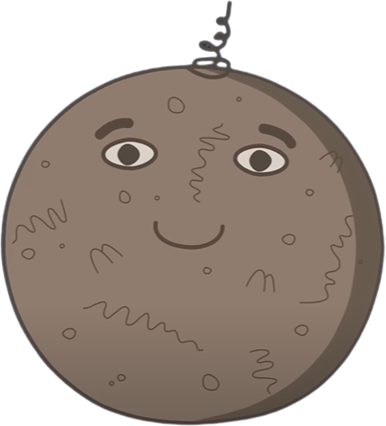
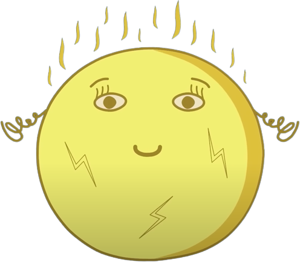
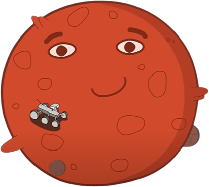
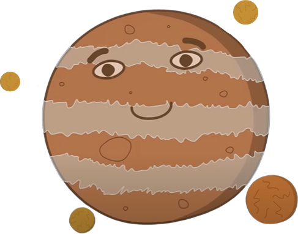
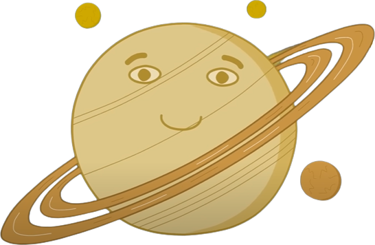
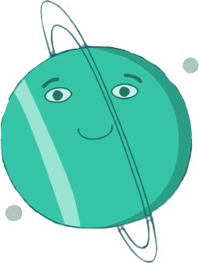
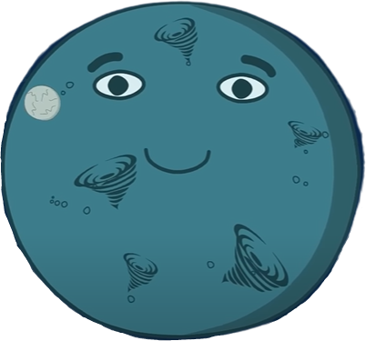

Дітям про Сонячну систему

Це - Сонячна система. Вона складається із Сонця, великих планет та дрібніших космічних об’єктів. Всього планет вісім: Меркурій, Венера, Земля, Марс, Юпітер, Сатурн, Уран і Нептун. Кожна з планет особлива. Та – найгарячіша, та – найшвидша, а на одній із них навіть існує життя! Погляньмо ж уважніше на планети Сонячної системи. Почнімо із самого Сонця.
Сонце

Сонце – центр Сонячної системи. Сонце – це наша прекрасна зоря, що дає нам світло і тепло. Воно немає твердої поверхні, а являє собою газову кулю, майже досконалу за формою. Довкола Сонця обертаються планети.
Перша планета від Сонця - Меркурій
Меркурій є найменшою планетою Сонячної системи. Він знаходиться найближче до Сонця. Це також найшвидша планета Сонячної системи. На поверхні Меркурія безліч кратерів та гір.
Друга планета від Сонця - ВЕНЕРА
Венера – найгарячіша планета сонячної системи. Вона обертається навколо своєї осі в напрямку, протилежному до інших планет, і дуже повільно. На Венері постійно спалахують блискавки. Планета є найближчою сусідкою Землі, її гарно видно на нашому небі навіть без телескопа!
Третя планета від Сонця - ЗЕМЛЯ
Земля – це наша чудова домівка. Вона не схожа на інші планети, адже тільки тут існує життя. Більшу частину поверхні Землі займають океани і моря, тому ще її називають блакитною планетою. У Землі є супутник – Місяць.
Четверта планета від Сонці-МАРС
Марс ще називають червоною планетою через характерний колір поверхні. Тут знаходиться найвищий вулкан в Сонячній системі – Олімп. На Марсі вирують найбільші пилові бурі, які можуть охоплювати всю планету й тривати місяцями. Супутники Марса – Фобос і Деймос. Планету активно досліджують марсоходи.
П’ята планета від Сонця - ЮПІТЕР
Юпітер – це газовий гігант і найбільша планета Сонячної системи. Юпітер у 2,5 разі важчий за усі інші планети разом узяті, та велика вага не заважає йому обертатись найшвидше серед усіх. Юпітер також випереджає інші планети за кількістю супутників. Один з супутників, що зветься Ганімет, є найбільшим у Сонячній системі. В атмосфері Юпітера численні смуги хмар.
Шоста планета від Сонця - САТУРН
Сатурн – ще один газовий гігант. Планета відома своїми кільцями, які складаються з льоду, заліза та каміння. Сатурн має велику кількість супутників, найбільшим серед яких є Титан. Цікаво, що це єдиний супутник в Сонячній системі, що має атмосферу.
Сьома планета від Сонця - УРАН
Уран - це крижаний газовий гігант і найхолодніша планета Сонячної системи. На відміну від інших планет, від обертається, лежачи на боці. Уран має кільця з льоду та пилу.
Восьма планета від Сонці-НЕПТУН
Нептун – ще один крижаний гігант і найвіддаленіша планета від Сонця. В атмосфері Нептуна бушують вітри, найсильніші серед усіх планет Сонячної системи. Нептун – це найповільніша планета.